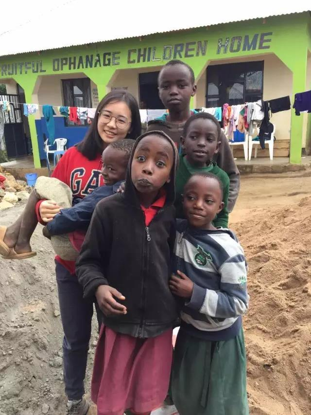
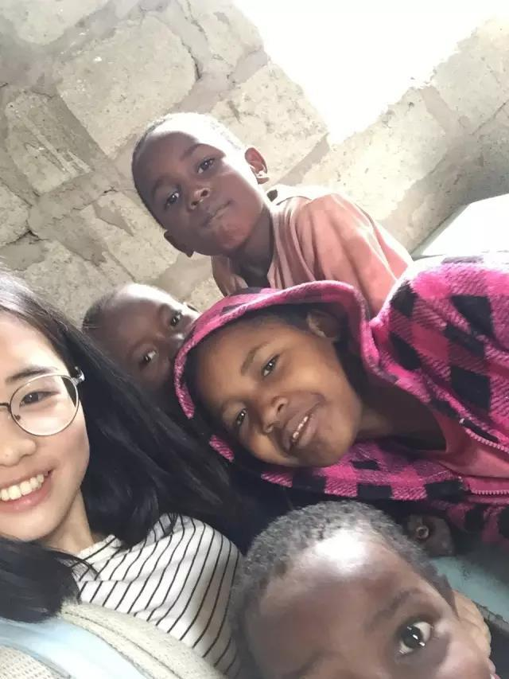
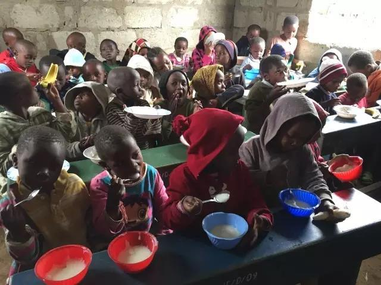
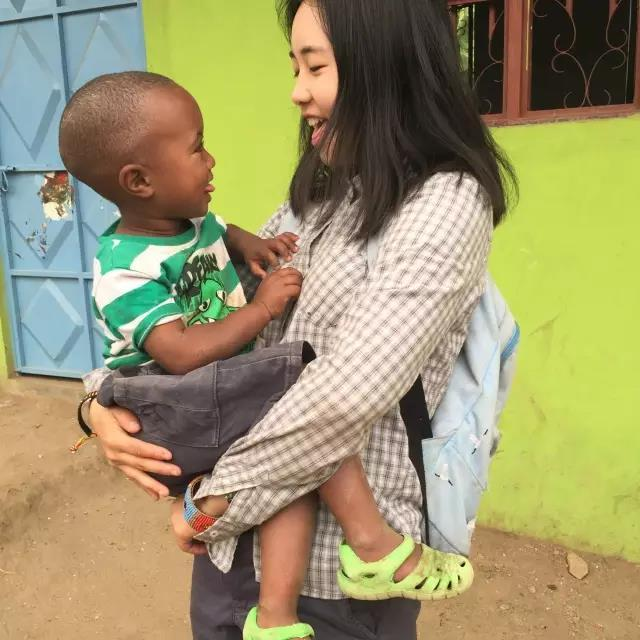

Self-giving,consecratory,lucky...
I traveled all the way to Africa to do volunteer work for my parents. Liao jia-tao, a girl born after 1995, is a freshman medical student at wenzhou medical university. As a child, she became a mother of African orphans in Tanzania.
Public welfare makes me more loving life and cherishing everything I have. Liao said that she has gained a lot from her volunteer experience in Africa, but the volunteers will eventually leave and the supplies she buys will eventually run out.
Talking about why she chose to work as a volunteer in remote Tanzania, tao liao said that it was an idea that came into being in an instant by chance.
Liao's parents, both doctors, are devoted to helping the sick and often donate to the welfare home. "Seeing the gratitude of my parents' patients makes me feel great about my career as a doctor and understand the meaning of helping others." Liu jia-tao, who had been trained by him, was enthusiastic about public welfare activities. After the college entrance examination, he organized his classmates to collect more than 1,000 clothes for children in quzhou mountain area. After she was admitted to wenzhou medical university, she actively participated in various public welfare activities on campus and began to plan a meaningful thing during the summer vacation. Liu was touched by an occasional sharing session with young Chinese volunteers abroad. She then went on the Internet to look up relevant materials, eventually contacted an international volunteer organization and successfully applied for the opportunity to work in Tanzania as a volunteer.
A girl who traveled all the way to Africa to do voluntary work, can her parents agree? For this, liu tao came to "cut the Gordian knot" and told his parents about his "crazy behavior" only after all the formalities had been completed. Although unexpected, after many communications, liu's parents finally chose to support their daughter.
"The support from my parents is still important, especially financially, which solves a big problem for me." "Said liu. Volunteering means not only not having any income, but also paying for your own round-trip air ticket and more than 6,000 yuan a month for room and board. To save money, Mr Liu took a budget airline and made multiple connections, but the round-trip ticket cost more than 5,000 yuan.
Her destination is arusha, in northeastern Tanzania, the country's second largest city, but the conditions are poor, with all manner of diseases. Prior to his departure, liu had made full preparations. He not only consulted a lot of materials, but also made a full use of the vaccines for hepatitis a, hepatitis b, yellow fever and brain circulation, and took anti-cholera drugs for a month.
Her children's hard life made her very sad. She wanted to do her best to bring some changes, even just a little warmth, to her children. In order to solve the problem of poor orphanage, launched a network the Liao Jiatao during volunteering, raise a few days for the orphanage to raise 30000 yuan, and use the money to buy the first computer, the first TV set, the first printer, two solar panels, and first aid kit, two new football, a lot of food, and so on. She went out of her way to buy new clothes, shoes, school bags for all the children, and gave everyone their own pencils, erasers and exercise books. Seeing the children's happy faces, Mr Liu said he was particularly satisfied. Her crowd-funding campaign also showed the love of young Chinese people to the international volunteers around her. They said they saw the love of Chinese people through liu jiantao, which increased their love for China.
"The innocent children in the orphanage will trust you unconditionally and love you unreservedly." Liao said that the children regard their volunteers as their relatives. They will pick them up at the bus station on time every morning. Along the way, the children held the hands of the volunteers in silence and kept smiling. At this time, Ms. Liao said, she felt particularly happy.
Liao often buys some sweets to bring to the children in the orphanage. Once, when the candy was distributed to the last little boy, the child showed a pitiful expression and made her feel sad. So she rummaged through the bag and found a cookie. The boy hugged her excitedly. After school that day, the boy slipped a piece of paper into his pocket with a heart on it and the words "ILOVELUCY" (LUCY is liu's English name). Every day after that, the little boy would draw a picture for her and hold her hand to take her down the hill after school.